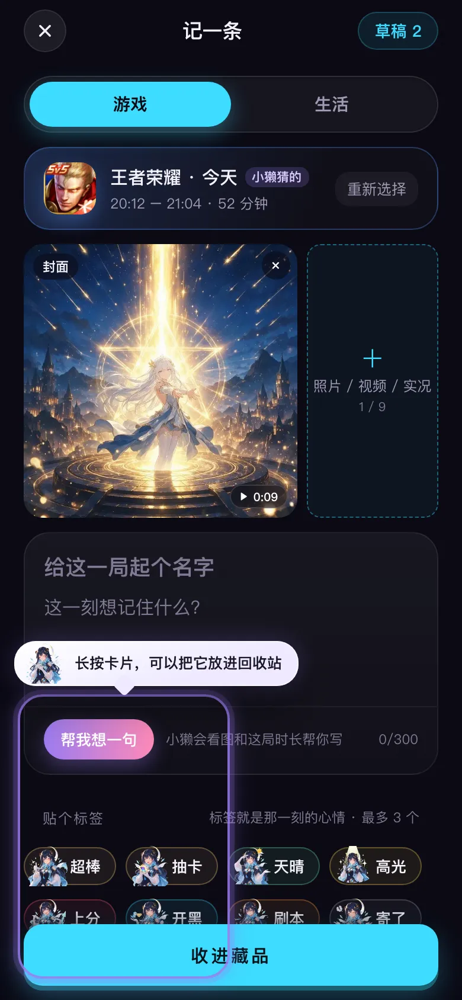
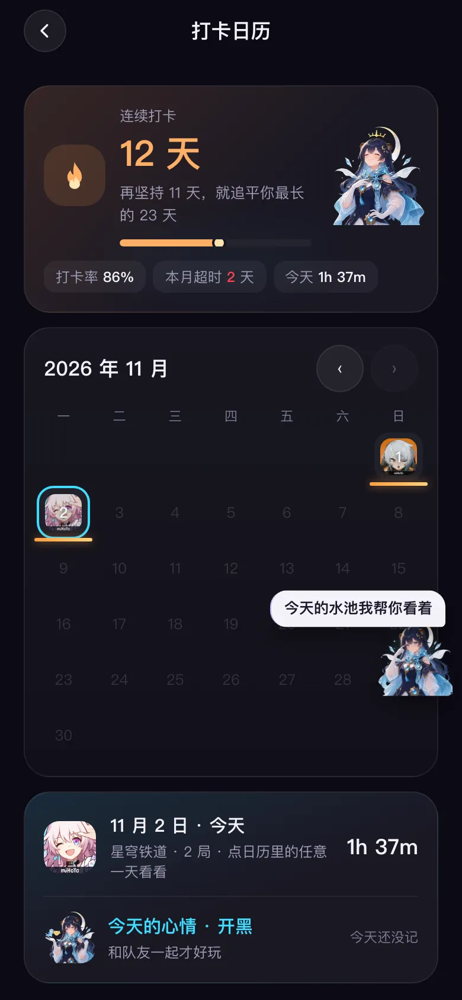
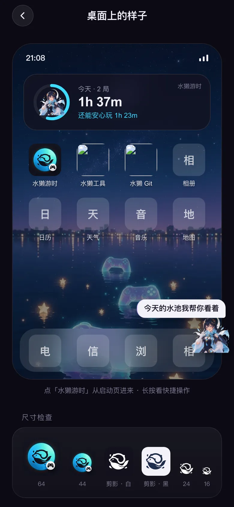
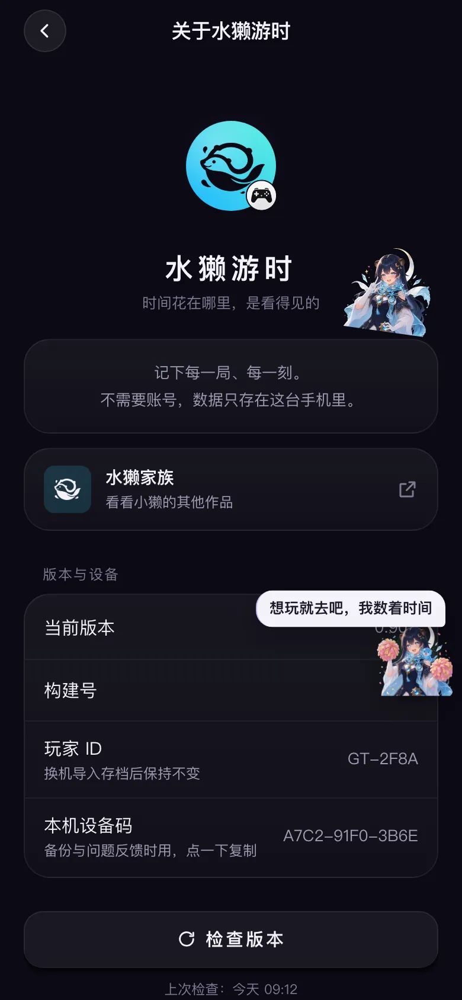
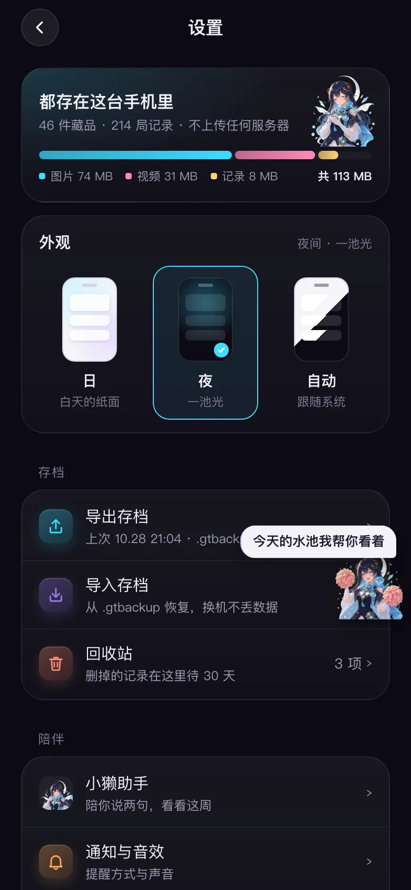
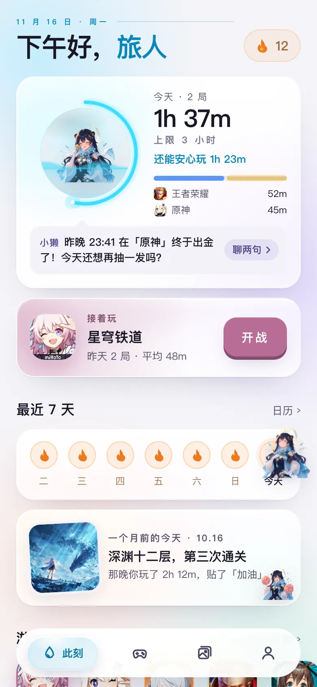
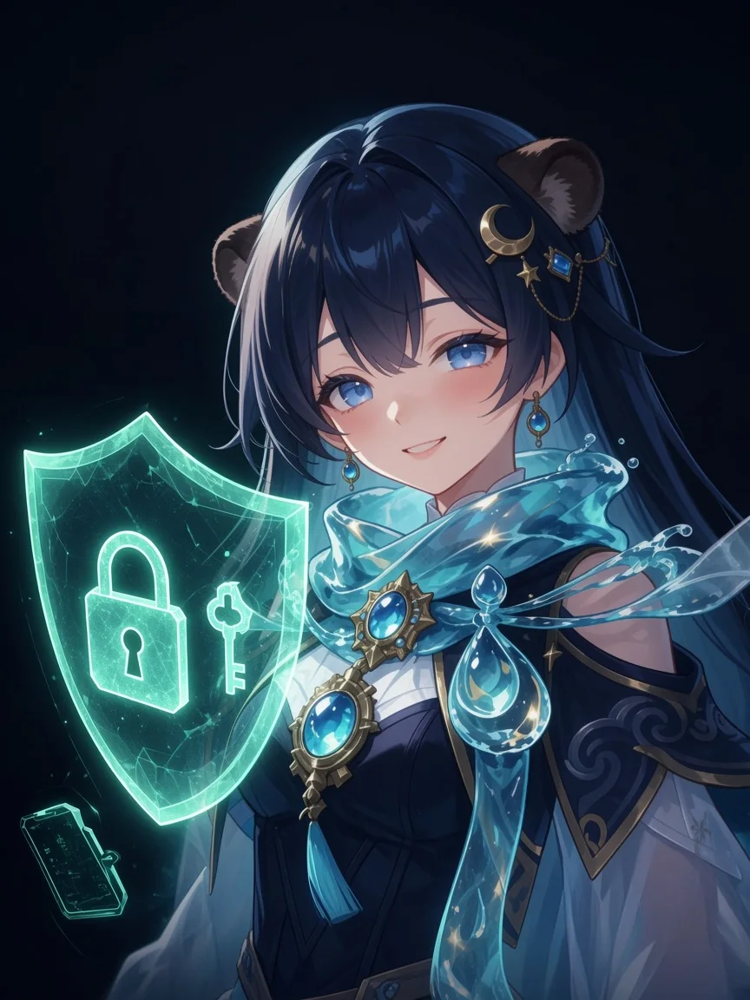
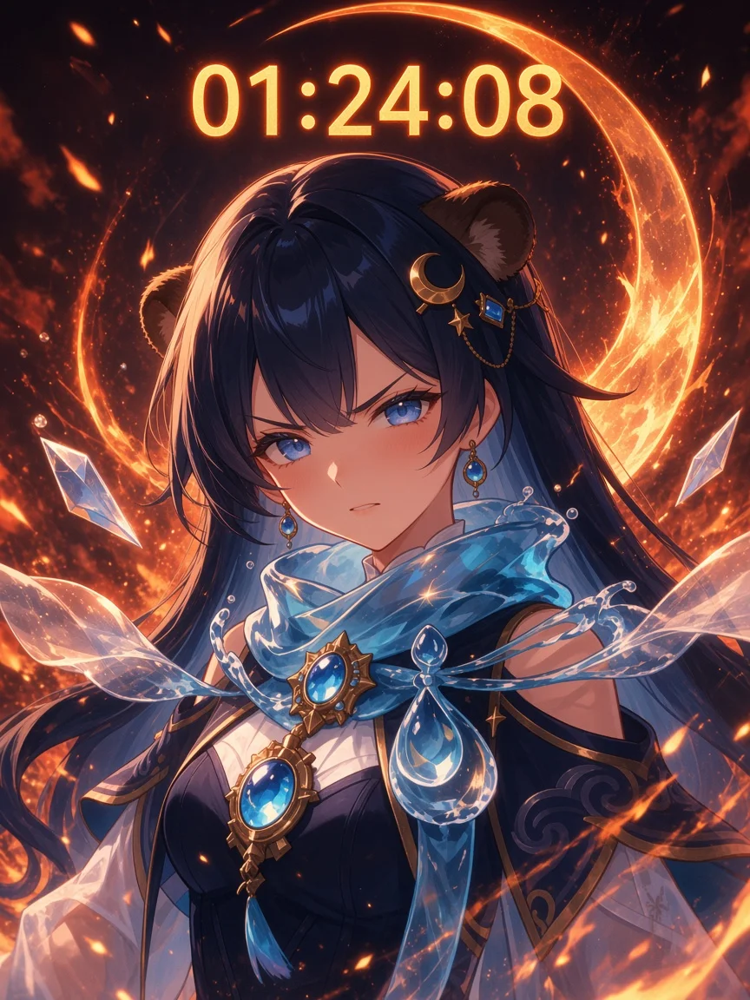
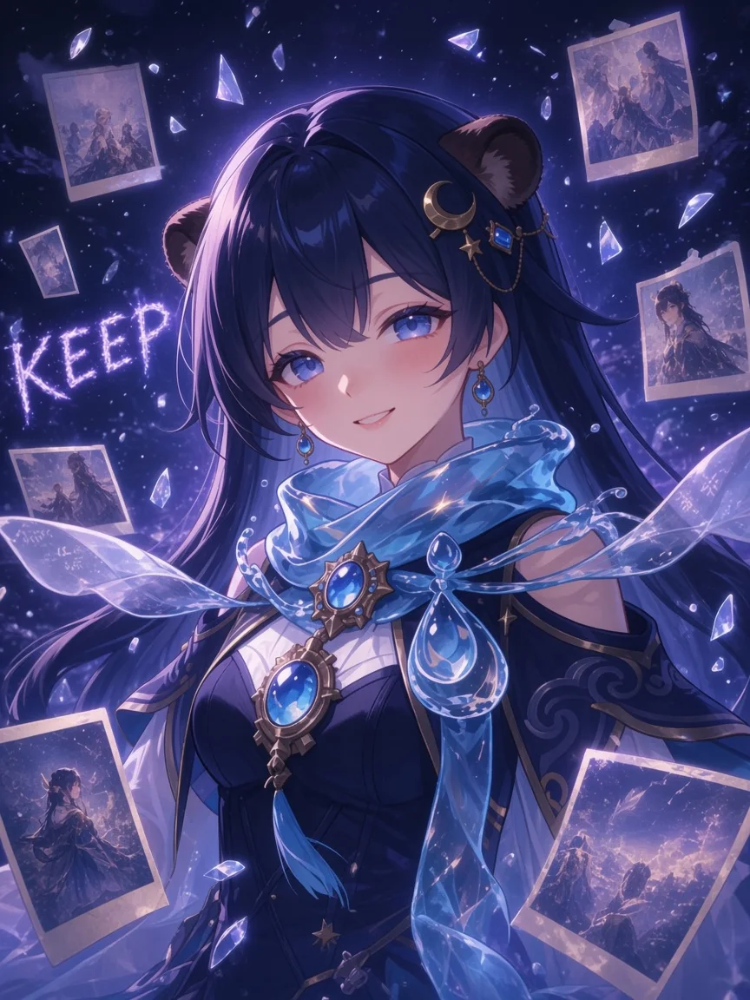

专心打完这局
计时在烧，她坐在旁边。收工时，一眼能看见你刚刚走完的路。



真机试用
样板里是与 App 同源的交互原型。点屏幕直接操作，也可用右侧切换页面与深浅色。
陪伴
从开战到收工，再到翻藏品——表情跟着节奏换，不是说明书，是并肩。
计时在烧，她坐在旁边。收工时，一眼能看见你刚刚走完的路。

功能
说明都用真机截图说话——你看到的，就是 App 里的样子。
选好这一局，计时开始烧。青是此刻，橙是开战，红是快到上限。


通关、宵夜、雨停。把值得留下的贴上墙，翻开仍有当晚的温度。


心情、社交、游戏、生活……她用一整套表情陪你开战、收工、翻相册。



数据在这台手机。想聊两句时，可自备 AI Key，请求直连你的服务商。



深浅一瞥
浅色
深色
沉浸
立绘走进场景：水位数字、开战计时、藏品光点、心情星座、本地护盾——一眼读懂特色。


Film
从空池到开战，再到藏品。把游时的呼吸，用一条 16:9 的片子讲完。
水獭游时 · 游戏与生活的时间伴侣。本地优先，她陪着。